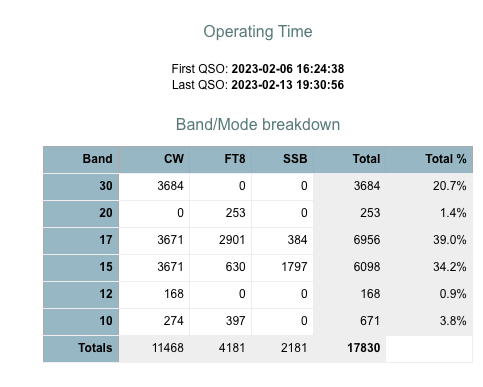
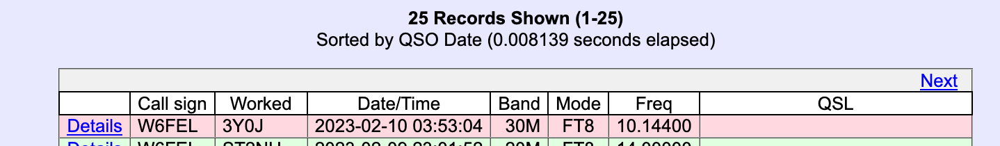
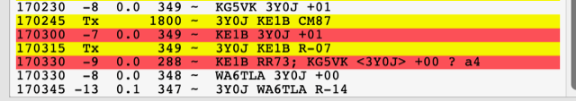

_______________________________________________Hi Steve-
Was 0353. Alas no screenshot of the WSJTX result.

Its pretty hard to believe that the entire 30M FT8 operation was pirated. Sure seems like an incomplete upload
73s!
Jon
From: Steve Jones <n6sj@earthlink.net>
Date: Tuesday, February 14, 2023 at 11:49 AM
To: 'Jon Zweig' <jz@sonic.net>, 'KE1B' <ke1b@richseifert.com>, 'Steve Dyer W1SRD' <w1srd@yahoo.com>, 'NCDXC Discussion List' <chat@ncdxc.org>
Subject: RE: [NCDXC Chat] 3Y0J Logs uploaded
Jon,
I was in that pileup and worked them at 0320Z. Was that about your time?
73,
Steve
N6SJ
From: Chat <chat-bounces@ncdxc.org> On Behalf Of Jon Zweig via Chat
Sent: Tuesday, February 14, 2023 10:24 AM
To: KE1B <ke1b@richseifert.com>; Steve Dyer W1SRD <w1srd@yahoo.com>; NCDXC Discussion List <chat@ncdxc.org>
Subject: Re: [NCDXC Chat] 3Y0J Logs uploaded
I worked somebody signing as 3Y0J on 30M FT8 on 10 Feb and got a good report back but nada in the log. Maybe they just completed a partial upload of the FT8 files.
Keep thinking of the days when you worked them (maybe) and hoped….
Cant be that all the 30M FT8 QSOs were slim.
73s de W6FEL
From: Chat <chat-bounces@ncdxc.org> on behalf of KE1B via Chat <chat@ncdxc.org>
Reply-To: KE1B <ke1b@richseifert.com>
Date: Tuesday, February 14, 2023 at 10:18 AM
To: Steve Dyer W1SRD <w1srd@yahoo.com>, NCDXC Discussion List <chat@ncdxc.org>
Subject: Re: [NCDXC Chat] 3Y0J Logs uploaded
On Feb 14, 2023, at 10:13 AM, Steve Dyer W1SRD via Chat <chat@ncdxc.org> wrote:
My FT8 QSO's are missing.
Anyone else?
73,
Steve
W1SRD
Yes, mine are missing too.

I don’t know if this was a pirate, or they haven’t loaded ALL of the logs yet.
Rich KE1B
_______________________________________________ Chat mailing list Chat@ncdxc.org http://mail.ncdxc.org/mailman/listinfo/chat_ncdxc.org
Chat mailing list
Chat@ncdxc.org
http://mail.ncdxc.org/mailman/listinfo/chat_ncdxc.org